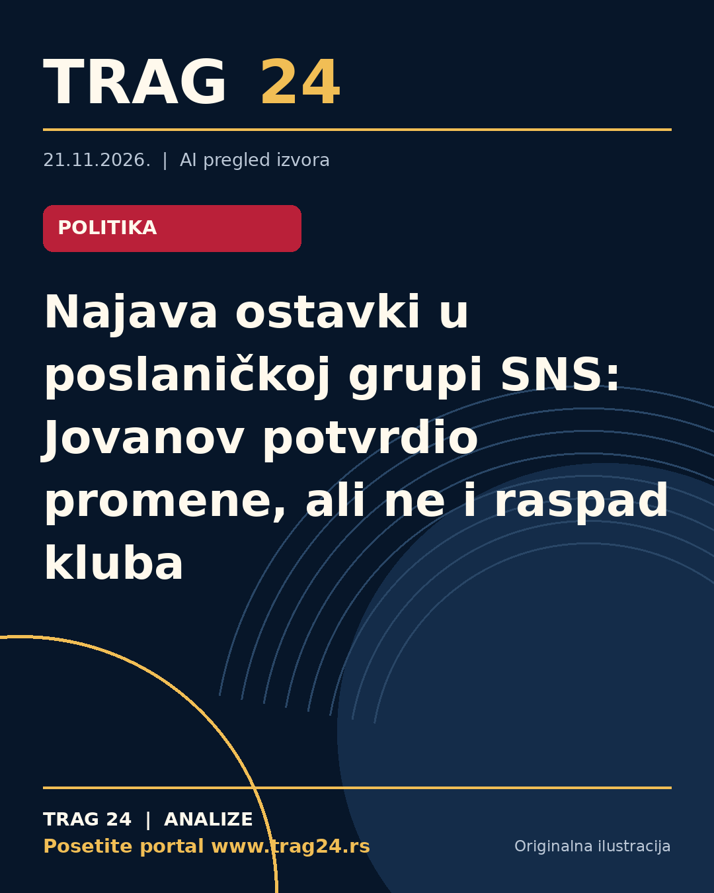

Najava ostavki u poslaničkoj grupi SNS: Jovanov potvrdio promene, ali ne i raspad kluba

ŠTA SE DOGODILO
Poslanik Srpske napredne stranke (SNS) Marko Korać podneo je ostavku na mandat, a zamenik šefa poslaničke grupe SNS Milenko Jovanov najavio je da će još sedam ili osam poslanika sa liste SNS podneti ostavke. On je istakao da će na njihova mesta doći isto toliko kandidata sa te liste, pa će ukupni broj poslanika SNS u Narodnoj skupštini ostati 103.
HRONOLOGIJA
Marko Korać je, prema rečima Milenka Jovanova, najavio svoju ostavku iz privatnih razloga na jednom od sastanaka poslaničke grupe, pre nego što je podneo ostavku. Koraćeva ostavka trebalo je da bude formalno pročitana u Skupštini, nakon čega je upućena Administrativnom odboru, zatim Republičkoj izbornoj komisiji (RIK), koja dodeljuje novi mandat. Jovanov je izjavio da će ostavke ostalih poslanika uslediti tokom ili odmah nakon aktuelne sednice Skupštine.
ŠTA NAVODE IZVORI
Sva tri izvora - Kurir, Nova.rs i Danas - prenose izjave Milenka Jovanova od 19. novembra u kojima je potvrđeno da Marko Korać nije prihvatio mandat zbog ličnih razloga i da će još nekoliko poslanika SNS podneti ostavke, dok će novi kandidati sa liste SNS zameniti one koji odlaze. Jovanov je posebno naglasio da ne postoji nikakav raspad poslaničke grupe SNS kako su to navodno neki izveštaji pokušali da predstave.
ŠTA JE POTVRĐENO
Potvrđeno je da je Marko Korać napustio poslanički klub SNS iz privatnih razloga i da ostavka znači njegovo napuštanje mandata, ali on se još vodi kao samostalni poslanik dok administrativni i izborni proces ne bude završen. Takođe je potvrđeno da će ostavke biti podnete u narednom periodu i da će poslanici biti zamenjeni novim kandidatima sa SNS liste, pri čemu će brojnost poslaničke grupe ostati nepromenjena.
ŠTA NIJE POTVRĐENO
Nije potvrđeno koliko su ostalih poslanika u planu da podnesu ostavke tačno (navodi se između sedam i osam) niti su navedeni njihovi identiteti. Takođe, nisu data dodatna objašnjenja o privatnim razlozima Marku Koraću, niti je jasna dinamika svih zamena poslanika u narednim sednicama.
ŠTA OSTАJE OTVORENO: Ostaje otvoreno da li će u narednom periodu biti dodatnih promena u poslaničkoj grupi SNS osim najavljenih ostavki i zamenа, kao i koji su detaljni razlozi za odlazak poslanika. Takođe nije poznato da li će ove promene imati uticaj na rad skupštinske grupe i njenu politiku, osim tvrdnji da nema razloga za brigu i da poslanici SNS ostaju u punom kapacitetu.
Izvori
- https://www.kurir.rs/vesti/politika/10168540/jovanov-najavio-ostavke-poslanika-sns
- https://nova.rs/vesti/politika/milenko-jovanov-jos-sedam-ili-osam-poslanika-sns-podnece-ostavke/
- https://www.danas.rs/vesti/politika/milenko-jovanov-poslanik-ostavka/
Ova analiza je pripremljena uz pomoć veštačke inteligencije na osnovu javno dostupnih izvora. Navodi izvora nisu nužno nezavisno potvrđeni.